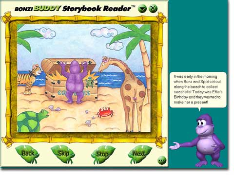

|
|
| New! "BONZI and the Treasure Chest!" Interactive Storybook! |
| My second Interactive Storybook is now here and it's
better than ever! I've created interactive software to help children of all ages learn to
read! I've designed my software to be fun, entertaining and educational! With my new
'Print' feature, we can print the entire story, "BONZI and the Treasure Chest."
I've even built in the ability to print out a coloring book version of this story, giving
us hours of enjoyment!  Copyright © 2003 by BONZI Software, Inc. All Rights Reserved
The story, 'Bonzi and the Treasure Chest' is a story of friendship. BONZI and his friends discover a treasure chest along the sea shore. They use the riches from the treasure chest to help celebrate Effie's birthday party. This story was designed to emphasize the importance of friendship and sharing! Come along with BONZI and his friends as they continue to explore and learn more about each other and the world they live in. Best of all, my new Storybook has all kinds of new features:
What is the "Storybook Reader" Module for BonziBUDDY? The "Storybook Reader" add-on module allows you and I to read stories together. I've designed several settings with my storybook software:
The "BONZI and the Treasure Chest!" storybook, includes my Interactive Storybook reader software -- FREE! This will enable us to enjoy "BONZI and the Treasure Chest!" for years to come. "When you help a child learn to read, you help open the door to a whole new world!" Join "BONZI" and his friends in the second of a series of interactive children's books being made available for BonziBUDDY!
|
SPECIAL OFFER:
For a limited time, you get "BONZI and the Treasure Chest!" here
online for only $14.95 (Regularly |
System Requirements:Copyright © 1995 - 2003 BONZI Software, Inc. Windows, Microsoft Internet Explorer, and Microsoft are registered trademarks of Microsoft Corporation. BonziBUDDY and BONZI are trademarks of BONZI Software, Inc. All rights and liabilities with respect to BonziBUDDY belong solely to BONZI Software, Inc. Copyright © 1995 - 2003 - All Rights Reserved. |